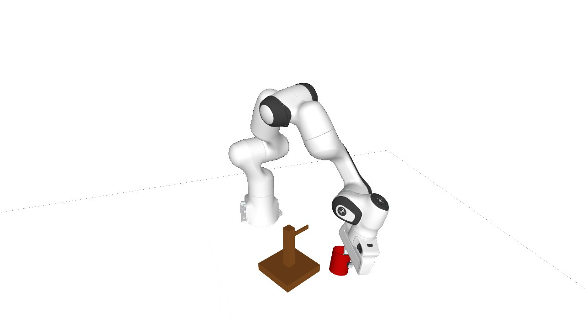

现在看演示
浏览器里切换五种机器人，查看策略动作、历史轨迹和结果。
打开录像库机器人操作 · 世界模型 · 仿真研究
看真实保存的动作录像，切换机器人与策略，了解在线世界模型如何帮助机械臂学习操作。
无需安装即可观看。独立研究项目，当前展示均为仿真。

浏览器里切换五种机器人，查看策略动作、历史轨迹和结果。
打开录像库Python 标准库即可启动。没有 GPU、API Key 或 npm 构建要求。
复制启动命令查看协议、成功计数和公开材料，明确哪些可以复现。
阅读复现说明网页、录像与结果已公开，可直接启动与检查。训练代码、模型和复位库尚未作为算法复现包发布。
git clone https://github.com/FBddcz/Embodied-SuperMimic.git
cd Embodied-SuperMimic
python3 scripts/serve.py --port 8765python3 scripts/check_site.py
python3 scripts/test_preview.py
node --check site/static/js/gallery.js最后一项需要 Node.js。修改公开文件后更新 release manifest 的大小和哈希。完整本地指南
挂杯任务，Teacher 与在线 Dyna 分开看。
| 机器人 | Teacher | Dyna @3000 | Dyna @4000 | Dyna 训练 seed |
|---|---|---|---|---|
| Panda | 79.3% | 87.1 ± 8.1% | — | 3 |
| ARX5 | 97.7% | 98.1 ± 1.4% | — | 3 |
| PiPER | 46.1% | 85.94% | 92.97% | 1 |
| UR5e | 62.5% | 68.75% | 69.92% | 1 |
| xArm7 | 46.5% | 51.95% | 57.81% | 1 |
四类混合起点评测（256 集/检查点），不同于 HOME 完整任务评测；详细设置见展开项。
legacy_reset_v0 包含未抓取、桌面已抓握、空中已抓握与已穿柄起点。跨机器人复位与控制配置不同；新 home_fulltask_v1 正在实现，尚无正式分数。5 × 5 是目标，不是完成数量。 历史正式教师 8/25，环境契约 25/25；新增开发库 6 通过、9 阻塞。契约通过不代表任务或 HOME 验证完成，blocked 不是 0% 成功率。
| 任务 | Panda | ARX5 | PiPER | UR5e | xArm7 |
|---|---|---|---|---|---|
| 挂杯 | 教师已评测 | 教师已评测 | 教师已评测 | 教师已评测 | 教师已评测 |
| 柠檬放置 | 教师已评测 | 教师已评测 | 教师已评测 | 仅契约通过 | 仅契约通过 |
| 方螺母插入 | 小库通过 | 小库通过 | 阻塞：预抓取 0/3 | 小库通过 | 小库通过 |
| 放物关抽屉 | 阻塞：IK 见证 | 小库通过 | 阻塞：IK 见证 | 阻塞：碰撞/限位/抓抬 | 阻塞：碰撞/限位/抓抬 |
| 盒子入箱 | 阻塞：候选不足 | 小库通过 | 阻塞：候选不足 | 阻塞：候选不足 | 阻塞：候选不足 |
抽屉预先打开，任务为放物并关抽屉，不包含开抽屉。同一本体五任务混训是后续比较，尚未完成。


历史复位示意，不是已验证的新 HOME 起点。UR5e / xArm7 夹爪使用棱柱手指近似，不宣称真机结构等价。
从自己的新经验中继续学习：策略在仿真中行动，世界模型吸收新转移，再通过可微想象轨迹更新策略。我们关注这种在线循环，能否持续改善操作表现。
每个机器人与任务有自己的专家。当前策略使用状态观测，v7 从教师世界模型、critic 和 BC 策略初始化后继续学习。
home_fulltask_v1 使用预先固定并验证的准备姿态，随机物体与目标，张开空夹爪，从任务开始执行。保持原生成功标准与时限，历史中途复位成绩另列。
协议正在实现、尚未冻结，没有新 HOME 正式分数。安全起点不等于完整路径或真机安全认证。抽屉任务从预打开状态放物并关抽屉，不包含打开动作。
阅读协议概要播放问题、实验讨论和失败案例都欢迎。如果演示对你有帮助，也欢迎在 GitHub 留下一颗 Star。
感谢每一份关注，让更多人一起探索机械臂世界模型。